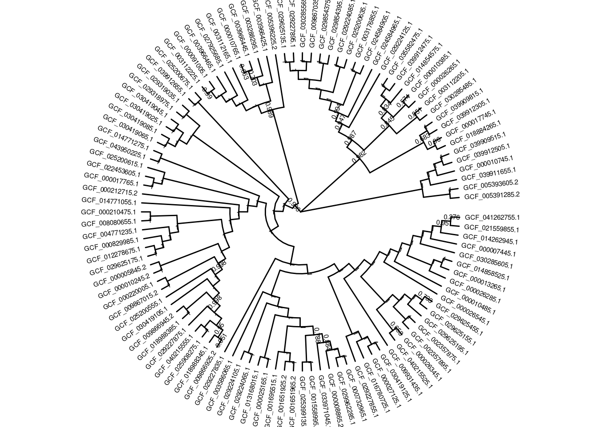
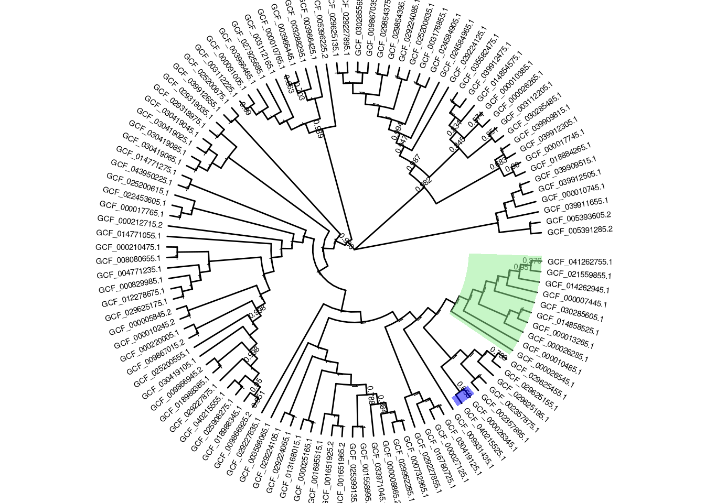
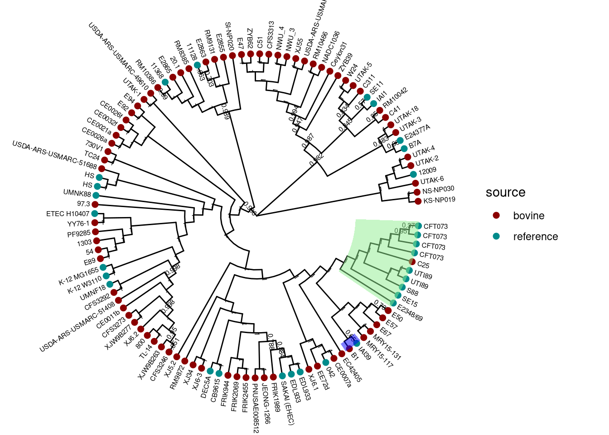
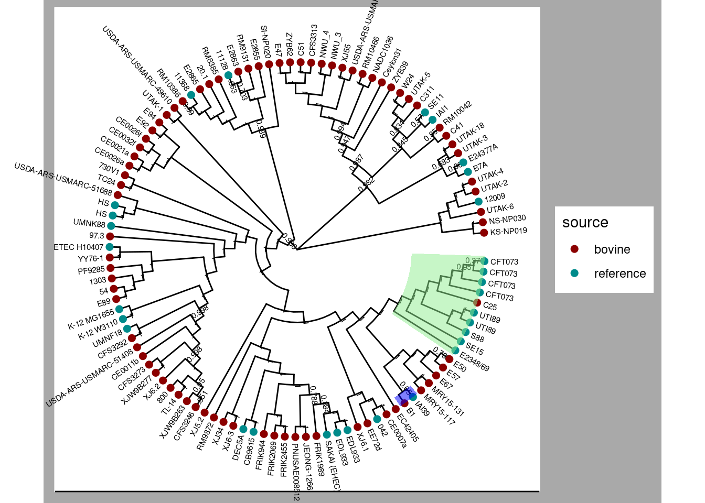
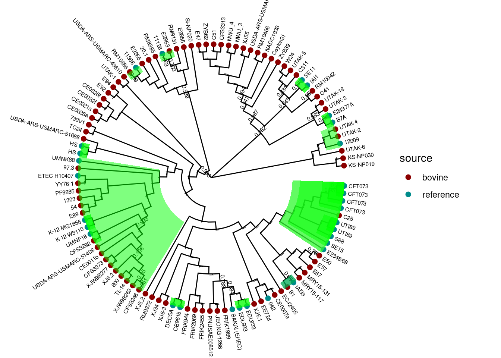
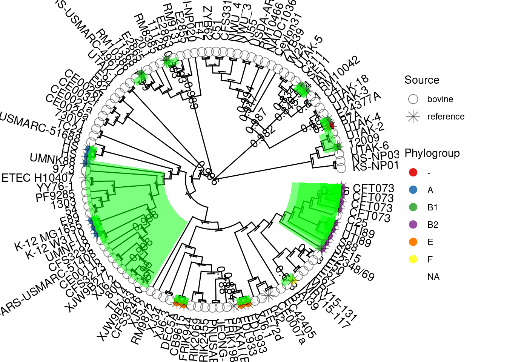
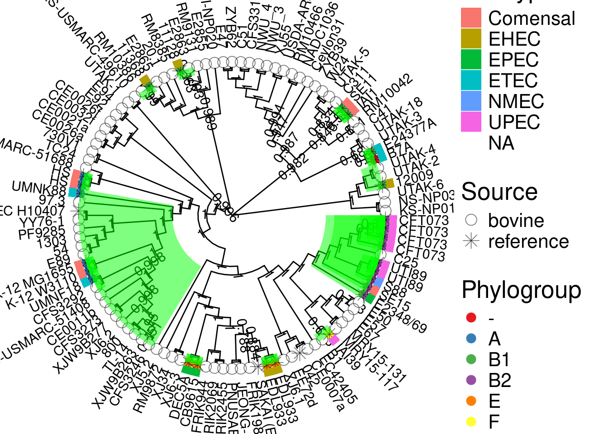
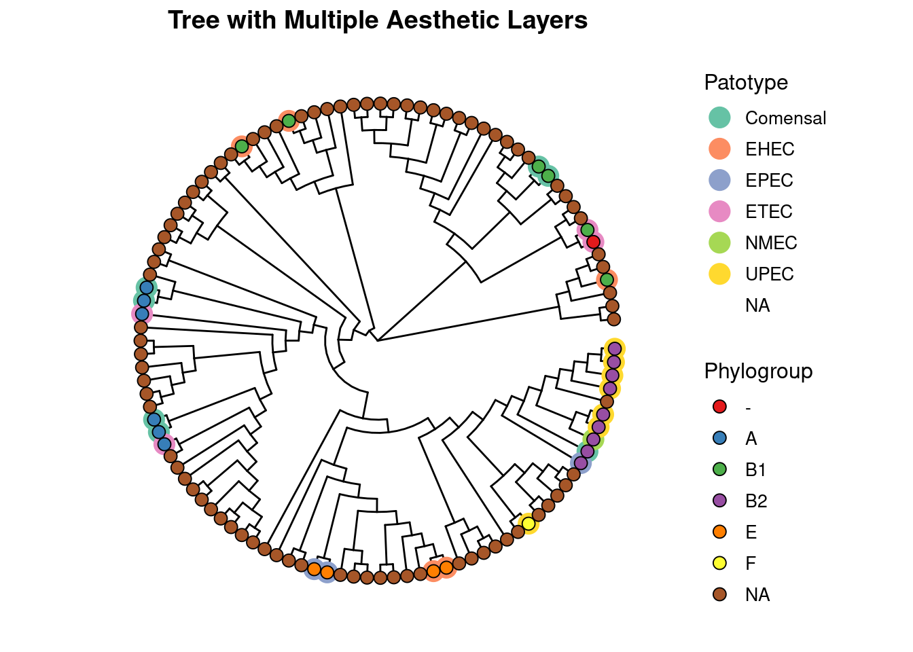

library(ggtree)
library(treeio)
library(ggplot2)
library(dplyr)custom_recipes
Custom Recipes
We will load a phylogenetic tree in Newick format for demonstration:
Prepare session:
# Load a tree file
tree <- read.newick("example_2_phylo.nwk")
tree$node.label <- round(as.numeric(tree$node.label), digits = 3)Circular Layout Visualization
Circular layouts are excellent for presenting large or complex trees. They allow for efficient space usage and a visually appealing presentation.
# Circular tree with basic styling
circular_tree <- ggtree(tree, layout = "circular",
branch.length = "none") +
geom_tiplab(size = 2, aes(angle = angle), offset = 0.5) +
geom_nodelab(color = "black", size = 2, nudge_y = 0.5)
circular_tree
Highlighting Clades in Circular Trees
Highlighting specific clades can make the tree more interpretable. Use the geom_hilight function:
# Highlight specific clades
highlight_tree <- circular_tree +
geom_hilight(node = 199, fill = "blue", alpha = 0.5) +
geom_hilight(node = 200, fill = "lightgreen", alpha = 0.5)
highlight_tree
Adding Heatmaps to Circular Trees
We can add metadata as heatmaps around the tree:
# Cargar metadata
metadata <- readr::read_tsv("Experiment_Design_example_2.tsv")
metadata <- metadata %>%
rename(label = Assembly.Accession)
# The rows have to be in the same order as the tree
metadata_ordered <- metadata %>%
filter(label %in% tree$tip.label) %>%
arrange(match(label, tree$tip.label))
metadata_ordered$Phylogroup <- replace(metadata_ordered$Phylogroup, is.na(metadata_ordered$Phylogroup), "NA")
metadata_ordered <- metadata_ordered[,c(-1,-2)]
rownames(metadata_ordered) <- make.unique(metadata_ordered$Strain)Warning: Setting row names on a tibble is deprecated.colnames(metadata_ordered)[1] <- "label"
# Change tip label
tree$tip.label <- metadata_ordered$label
# Merge metadata with tree
p_circular_heatmap <- ggtree(tree, layout = "circular",
branch.length = "none") %<+% metadata_ordered +
geom_tiplab(size = 2, aes(angle = angle), offset = 0.5) +
geom_nodelab(color = "black", size = 2, nudge_y = 0.5)+
geom_tippoint(aes(color = source), size = 2) +
scale_color_manual(values = c("darkred", "darkcyan")) +
geom_hilight(node = 199, fill = "blue", alpha = 0.5) +
geom_hilight(node = 200, fill = "lightgreen", alpha = 0.5)
p_circular_heatmap
Styling Trees with Advanced Themes
ggtree provides options to customize the appearance of trees using themes. Here’s how to use them effectively.
Customizing Themes for Trees
# Applying a theme with a clean background
styled_tree <- p_circular_heatmap +
theme_tree2() +
theme(
plot.background = element_rect(fill = "darkgrey", color = NA),
panel.border = element_blank(),
panel.grid = element_blank(),
axis.text = element_blank(),
axis.ticks = element_blank()
)
styled_tree
Find node-tip association
If you want to fill color some nodes using the tip label, use this:
# Extract the tree data
tree_data <- as_tibble(tree)
# Select the labels to search
# In this case use the labels that have data in Patotype
strains <- metadata_ordered %>%
filter(!is.na(Patotype)) %>%
select(label) %>%
as.vector() %>% unlist()
# Find tips and their parent nodes
tips_and_nodes <- tree_data %>%
select(label, parent) %>%
filter(label %in% strains)
p_circular_heatmap +
geom_hilight(node = tips_and_nodes$parent, fill = "green", alpha = 0.5) 
Adding Multiple Aesthetic Layers
Combine multiple layers for richer visuals:
# Adding branches with customized colors
pal <- c(
RColorBrewer::brewer.pal(6, "Set1"),
"#FFFFFF"
)
p <- ggtree(tree, ladderize = TRUE, branch.length = "none", layout = "circular") %<+% metadata_ordered +
geom_tiplab(aes(label = label, angle = angle), linesize=.1, size = 4, align = FALSE, color = "black",
offset = 1.5) +
geom_nodelab(size = 4, color = "black", nudge_x = 0.1) +
geom_tippoint(aes(color = Phylogroup), size = 5, shape = 20) +
geom_tippoint(aes(shape = source), size = 4, alpha = 0.5) +
scale_shape_manual(values = c(1, 8)) + labs(shape = "Source") +
scale_color_manual(values = pal) +
geom_hilight(node = tips_and_nodes$parent, fill = "green", alpha = 0.5)
p
Add heatmap
matrix_data <- data.frame(Patotype = metadata_ordered$Patotype)
rownames(matrix_data) <- make.unique(metadata_ordered$label)
# Add heatmap
gheatmap(p, matrix_data, width=0.05,
colnames=FALSE, legend_title="Patotype", color = NA, ) +
theme(text = element_text(size = 20))
Combining Trees with ggnewscale
Use the ggnewscale package to add multiple scales of colors:
# Adding new scale for different metadata layers
multi_scale_tree <- ggtree(tree, layout = "circular", branch.length = "none") %<+% metadata_ordered +
geom_tippoint(aes(color = Patotype), size = 5) +
scale_color_brewer(palette = "Set2", name = "Patotype") +
ggnewscale::new_scale_color() +
geom_tippoint(aes(fill = Phylogroup), shape = 21, size = 3, color = "black") +
scale_fill_brewer(palette = "Set1", name = "Phylogroup") +
theme(
legend.position = "right",
legend.title = element_text(size = 12),
legend.text = element_text(size = 10),
plot.title = element_text(size = 14, hjust = 0.5, face = "bold")
) +
ggtitle("Tree with Multiple Aesthetic Layers")
multi_scale_treeWarning: Removed 83 rows containing missing values or values outside the scale range
(`geom_point_g_gtree()`).